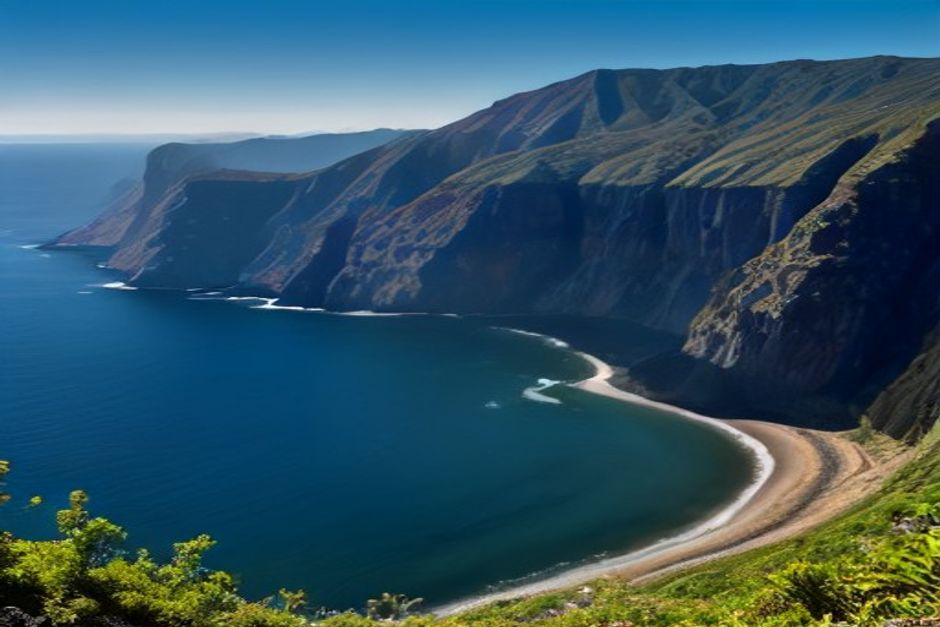
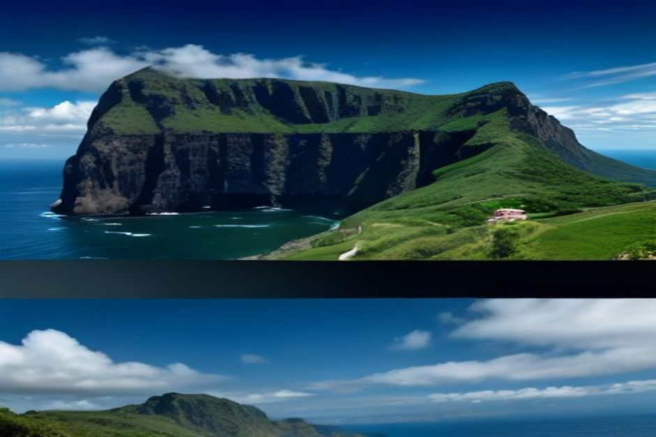

Wer „Garajau“ in die Suchmaschine eintippt, will meist drei Dinge wissen: Wo liegt das Naturschutzgebiet, darf man dort schnorcheln und lohnt sich der Abstecher? Kurz gesagt: Das Naturschutzgebiet Garajau liegt an der Südküste Madeiras zwischen Funchal und Caniço, ist seit 1986 geschützt und gilt als erstes Meeresschutzgebiet Portugals. Der Einstieg ist frei, und im Sommer ist das Wasser warm genug für einen entspannten Schnorchelgang. Hier finden Sie, was Sie vor der Anreise wissen sollten.
Garajau auf einen Blick
- Lage: Südküste Madeiras, östlich von Funchal, unterhalb von Caniço.
- Ausdehnung: rund sieben Kilometer Küste, von der Ponta do Lazareto am Stadtrand von Funchal bis zur Ponta da Oliveira bei Caniço.
- Seit: 1986, das erste Meeresschutzgebiet Portugals.
- Anfahrt: etwa 15 bis 20 Minuten mit dem Auto über die Küstenstraße, oder eine kurze Fahrt mit dem Boot ab der Marina do Funchal.
- Einstieg zum Schnorcheln: öffentlich und kostenlos, bei Caniço de Baixo.
- Wassertemperatur: etwa 18 °C im Winter, 22 bis 23 °C zwischen Juli und Oktober.
Wo liegen die Praia do Garajau und die Ponta do Lazareto?
Das Schutzgebiet beginnt an der Ponta do Lazareto, kurz hinter Funchal, und zieht sich an der Küste entlang bis zur Ponta da Oliveira bei Caniço. Es umfasst die Felsen am Ufer und den Meeresboden bis zu einer festgelegten Tiefe. Verwaltet wird es heute von Madeiras regionaler Naturschutzbehörde.
Mit dem Auto erreichen Sie die Gegend in etwa 15 bis 20 Minuten von Funchal aus. Der Aussichtspunkt Cristo Rei oberhalb des Riffs ist von der ER101 aus ausgeschildert. Zum Baden und Schnorcheln fahren die meisten nach Caniço de Baixo: Dort führt eine Plattform am Strand direkt in das Wasser des Schutzgebiets.

Warum steht Garajau unter Schutz?
Das Riff war leergefischt. In den 1980er Jahren hatten Speerfischen und Netze entlang dieser Vulkanküste vor allem die großen, langsam wachsenden Arten fast verschwinden lassen. Fische, die Jahre zum Heranwachsen brauchen, waren die ersten, die fehlten.
Das Gesetz von 1986 verbot Jagd und Fischerei im gesamten Schutzgebiet. Seitdem hatte das Riff, was überfischte Gewässer selten bekommen: Ruhe. Später diente Garajau als Vorbild für weitere Schutzgebiete Madeiras, etwa um die Desertas-Inseln.
Was Sie unter Wasser sehen können
Vor allem Fische, die alt werden durften. Der Zackenbarsch ist das Aushängeschild: Er lebt viele Jahrzehnte und wird umso schwerer, je länger man ihn in Ruhe lässt. Ein großes Exemplar ist hier deshalb ein sichtbarer Beweis, dass der Schutz wirkt.
Dazu kommen Muränen in den Felsspalten, Garten-Aale im Sand, Kraken sowie große Schwärme von Brassen und Mönchsfischen. Am tieferen Rand des Gebiets ziehen gelegentlich Rochen vorbei, darunter auch Teufelsrochen. Garantieren kann niemand etwas: Was Sie sehen, hängt vom Tag ab.
Schnorcheln in Garajau: Einstieg, Regeln, Kosten
Der öffentliche Zugang bei Caniço de Baixo kostet nichts. Eine Genehmigung brauchen Sie zum Schnorcheln nicht. Es ist einer der einfachsten Orte der Insel, um ohne Boot ins Wasser zu kommen.
Gerätetauchen läuft üblicherweise über die lizenzierten Tauchzentren im selben kleinen Ferienort. Sie kennen die Zonen und wissen, was an welchem Tag offen ist. Bei guter Sicht im Sommer sind oft mehr als 20 Meter möglich.
Tipps für Selbstschnorchler:
- Bleiben Sie in Ufernähe.
- Halten Sie Abstand zu den Ankerplätzen der Tauchboote, denn manche Zonen sind für den Tauchbetrieb reserviert.
- Fischen und Jagen sind im ganzen Gebiet verboten.
- Bootsausfahrten und geführte Tauchgänge kosten extra, der freie Zugang bleibt davon unberührt.
Wann ist die beste Reisezeit?
Das Wasser verhält sich wie an der gesamten Südküste Madeiras: Im Winter hat es etwa 18 °C, zwischen Juli und Oktober steigt es auf 22 bis 23 °C. In diesen Monaten ist meist auch die Sicht am besten. Wer im Winter kommt, sollte einen Neoprenanzug einplanen und sich eher auf Aussichtspunkt und Küste konzentrieren.
Cristo Rei: der Aussichtspunkt über dem Riff
Die Statue gehört rechtlich nicht zum Schutzgebiet, ist aber sein Wahrzeichen. Der Christus-der-König steht 15 Meter hoch auf der Klippe an der Ponta do Garajau, die Arme zum Atlantik geöffnet. Eingeweiht wurde er 1927, einige Jahre vor der berühmten Statue in Rio de Janeiro, im selben Art-déco-Stil. Der Bildhauer war der Franzose Georges Serraz.
Vom Fuß der Statue blicken Sie senkrecht auf das Riff hinab. Es ist eines der besseren kostenlosen Panoramen an der Südküste und passt gut zu einem Schnorchelvormittag in Caniço de Baixo.
Garajau vom Meer aus erleben
Von der Marina do Funchal ist Garajau nur eine kurze Fahrt ostwärts. Boote, die in Richtung Caniço und Santa Cruz fahren, kommen am Schutzgebiet vorbei. Vom Wasser aus sehen Sie die Küste so, wie man sie von der Straße nie sieht.
Unsere Touren von Chifbay führen allerdings in die andere Richtung, nach Westen: Câmara de Lobos, Cabo Girão und Fajã dos Padres. Wer das Meeresschutzgebiet gezielt ansteuern möchte, fragt am besten vor der Buchung bei uns nach. Zusagen machen wir nur, was Wetter und Seegang zulassen.
So sehen unsere Fahrten aus:
- Tagestour: Abfahrt um 10:00 oder 14:00 Uhr. 2 Std. 30 bis Ribeira Brava für 500 EUR oder 3 Std. weiter bis Ponta do Sol für 600 EUR. Mit Câmara de Lobos, Cabo Girão sowie Badestopp und Paddleboards an der Fajã dos Padres.
- Sonnenuntergangsfahrt: Abfahrt 1 Std. 15 vor Sonnenuntergang, das ganze Jahr. 2 Std. bis Cabo Girão für 400 EUR oder 2 Std. 30 bis Ribeira Brava für 500 EUR. Ohne Badestopp.
Die Preise gelten für das ganze Boot, nie pro Person. Das Boot gehört nur Ihrer Gruppe, bis zu 5 Gäste, mit zwei lizenzierten Skippern aus Madeira auf einer Karnic R8S von 2026. Treffpunkt ist die Marina do Funchal, Steg C. Essen und Getränke an Bord, ein 360°-Video mit der Insta360, Drohnenaufnahmen (wenn das Wetter es erlaubt) und Fotos mit einer richtigen Kamera sind inklusive. Bis 24 Stunden vor Abfahrt stornieren Sie kostenlos. Mehr dazu finden Sie unter Erlebnisse, bei der Tagestour, der Sonnenuntergangsfahrt und in den praktischen Infos. Einen Überblick über die Möglichkeiten gibt auch unser Text zu den besten Bootstouren auf Madeira.
Lohnt sich Garajau?
Ja, wenn Sie wissen, was Sie erwarten dürfen. Garajau ist nicht so spektakulär wie Cabo Girão oder die Desertas-Inseln: Es gibt keine himmelhohe Klippe und kein Schauspiel auf offener See. Dafür ist es ein ruhiger Ort, an dem Sie sehen, wie die Küste Madeiras aussieht, wenn man sie einfach in Ruhe lässt.
Vierzig Jahre, in denen man ein Riff einfach in Ruhe ließ, haben ihm mehr gebracht als jedes Wiederbesatzprogramm.

Unser Fazit für Ihre Planung
- Für Schnorchler: Caniço de Baixo ansteuern, am besten zwischen Juli und Oktober.
- Für Fotografen und Landratten: Cristo Rei als kostenlosen Aussichtspunkt einplanen.
- Für Bootsfahrer: Die Küste östlich von Funchal liegt nah, doch unsere Touren fahren nach Westen. Fragen Sie vorab, wenn Garajau Ihr Ziel ist.